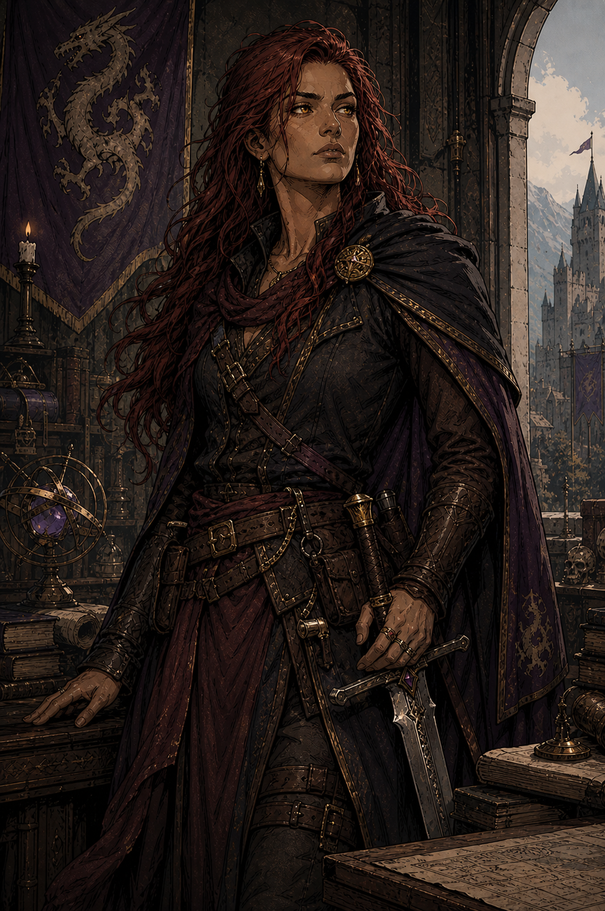

Caladnei
Cargo Maga Real de Cormyr Afiliación War Wizards; Corona de Cormyr Raza y clase Humana; hechicera 12/guerrera 4 (hoja de 1374 DR) Alineamiento Neutral buena Edad en 1374 Adulta; sin cifra fijada Fuentes The Siege · The Sorcerer · Elminster’s Daughter · Cormyr: Land of the Purple Dragon
Caladnei ocupa un cargo que obliga a responder incluso cuando las amenazas superan su poder. La Maga Real de Cormyr debe proteger a un rey niño, sostener a una regente acostumbrada a desenvainar y mandar sobre hechiceros que sirvieron durante años a otro hombre. No llegó a la corte por una larga sucesión de precedencias: Vangerdahast eligió a una aventurera de Turmish. Esa elección le dio autoridad, pero no la experiencia de todos los problemas que la aguardaban. En 1374, su fuerza consiste tanto en la magia como en la decisión de ejercer el mando sin fingir que nunca siente miedo.1
Cuero, dagas y una voz que exige respuestas
Su apariencia habitual se aparta de la ostentación de los salones. Lleva botas, prendas de cuero, bolsas y dagas al cinturón; recoge el cabello largo detrás de los hombros y no necesita joyas orgullosas para que sus órdenes se cumplan. Su piel oscura y sus miembros largos hacen de ella una figura reconocible entre los servidores de palacio. Los ojos, oscuros en reposo, adquieren un fulgor rojo cuando se encoleriza. Esa ira no tarda en aparecer cuando la tratan como una muchacha a la que se puede apartar de una conversación importante.2
En Marsember, durante 1373, una fugitiva que apenas sabía en qué reino se encontraba descubrió el alcance de aquella voz. Caladnei podía presentarse con suavidad, pedir un nombre y hacer sentir en la misma frase el peso de la ley. No hablaba como una funcionaria que necesitara permiso de cada guardia. Afirmaba representar a Cormyr y esperaba respuestas completas. Tal seguridad no anulaba sus límites: esa misma noche cayó en manos de cuatro Magos Rojos y necesitó ayuda para escapar de sus ligaduras.3
La joven que leía pergaminos
Antes de los títulos y las defensas de palacio estuvo Caladnei de los Pergaminos. Cobraba por activar escritos mágicos para quienes podían leer sus signos sin saber despertar el poder que contenían. Cuando unos aventureros le preguntaron quién le había enseñado magia, respondió que sus conjuros nacían de su interior. La oferta de acompañarlos llegó entre risas, exhibiciones de monedas y una burla que la hizo enrojecer. Se levantó, anunció que iría con ellos y les dejó su dinero: quería ganar el suyo.4
La aventura no borró el miedo de inmediato. Ante su primer portal tuvo que encontrar valor suficiente para entrar en aquella luz azul entre dos pilares antiguos. Thloram la tranquilizó; ella avanzó sin esperar a sentirse invulnerable. Más adelante, sin conjuros y con una espada rota, corrió hacia una wyvern porque sus compañeros necesitaban ayuda. La muchacha que había deseado recorrer el mundo aprendió que el valor no garantizaba volver con todos los amigos.5
La compañía Brightstar Sash fue perdiendo las caras que habían convertido el viaje en una promesa. En Waterdeep, mientras Caladnei estudiaba esgrima con el tuerto Nathdarr, otros miembros intentaron robar a un noble. Rimardo y Vonda fueron capturados y murieron bajo tortura; Marcon y Thloram llegaron a buscarla para huir de los perseguidores. Nathdarr, que había empezado a respetar su trabajo con la espada, los vio escapar y recibió a quienes venían detrás con acero en la mano. El recuerdo une una formación conseguida con esfuerzo y una salida que ella no había elegido.6
El camino hacia Cormyr
La pérdida también la esperaba en casa. Maela Rynduvyn, su madre, murió en una tormenta frente a Starmantle cuando viajaba hacia Westgate. Caladnei regresó a Tharnadar Edge, en Turmish, y encontró a Thabrant quebrado por el dolor. El tallador sostuvo las manos como si todavía pudiera recoger algo que había desaparecido; anunció que volvería a Cormyr. Padre e hija tuvieron que despedirse sin haber podido despedirse antes de Maela.7
Años de viaje la llevaron después a Halruaa, donde una comisión bien pagada ocultaba una disputa entre familias. Meleghost Telchaedrin le advirtió del engaño y le comunicó otra noticia: Thabrant agonizaba en las colinas al norte de Immersea y quería verla. El anciano le entregó el conocimiento de un conjuro de teleportación. Caladnei insistió en ofrecer algo a cambio y compartió su magia de vuelo. Partió llorando, enlazando saltos mágicos hacia Cormyr. La senda que acabaría llevándola a la corte nació también de una obligación familiar.8
Una guerra y una sucesión
En 1372, todavía en servicio de Vangerdahast, viajó a Anauroch con Ruha y Hhormun para localizar Shade. Allí se mostró poco dispuesta a aceptar sin discusión las costumbres de sus anfitriones: rechazó el velo, discutió con el jeque Sa’ar y sospechó de las condiciones que este imponía para guiarlos. Sin embargo, terminó pactando y participó en una incursión para tomar veserabs. La misión exigía ocultamiento, paciencia y colaboración con personas cuyas prioridades no eran las de Cormyr.9
La destrucción de Tilverton dejó responsabilidades más duras. Caladnei auxilió a Vangerdahast, obedeció órdenes de evacuación y defendió a Galaeron cuando Alusair buscó un culpable para la catástrofe. Después ocupó el puesto de Maga Real. Desde el nuevo lugar tuvo que vigilar reuniones de aliados que podían haber sido convertidos en esclavos mentales y afrontar enemigos capaces de inutilizar protecciones que parecían suficientes. El cargo no le ofreció una frontera clara entre la batalla, la diplomacia y la sospecha.10
El palomar y las obligaciones de palacio
En una torreta del palacio, un antiguo palomar se convirtió en su lugar para pensar. Caladnei camina allí, mira patios y jardines y vuelve sobre decisiones que no se resuelven con un único conjuro. Cuatro veteranos de los Dragones Púrpura custodian la puerta. Ella entra y sale mediante teleportación: un pequeño recinto del palacio es también un punto de partida para aten der problemas que pueden surgir en cualquier parte del reino.11
Laspeera es el apoyo que no esperaba encontrar. Al principio temió que la veterana resentiría el ascenso de una extranjera desconocida. En lugar de una rival recibió amistad, consejo y consuelo. Cuando el cansancio y las dudas la hacen desear la antigua eficacia de Vangerdahast, Laspeera no le exige seguridad teatral: reconoce en esa preocupación una señal de que se toma el trabajo en serio. Caladnei puede ordenar a muchos magos; con Laspeera también puede admitir que teme equivocarse.12
Nadie queda por encima del reino
Su relación con Vangerdahast reúne gratitud y resistencia. En 1373 descubrió que su predecesor seguía tomando decisiones ocultas que podían comprometer al reino. No aceptó que haber sido elegida por él la obligara a callar. Reclamó saber lo necesario para responder de su cargo y discutió los límites que debían imponerse incluso a un servidor tan antiguo de Cormyr. La respuesta de que su mentor sabía mejor que nadie lo que el reino necesitaba no la tranquilizó.13
También reclamó límites a Elminster y a la Simbul. Su rango no podía competir con el poder de los Elegidos, pero se negó a tratar la autoridad de Cormyr como un disfraz que estos pudieran ignorar. Más tarde Elminster le mostró una perspectiva del mundo que la dejó conmovida y más dispuesta a compren der a su antiguo maestro. Apren der no significó renunciar al cargo: regresó a las obligaciones que seguían esperándola.14
La dureza de Caladnei no se dirige solo contra iguales. Interroga, inmoviliza y amenaza cuando cree que la seguridad del reino lo exige. Su trato con Narnra empezó así, entre lecturas de pensamiento y una libertad que la cautiva no podía dar por segura. Después compartieron recuerdos y dolor; Caladnei acabó ofreciendo trabajo a la mujer a la que había hecho temer por su vida. La cooperación no borra la inquietud de aquella primera desigualdad.15
En Thundaerlyn Hall, durante 1373, esas obligaciones volvieron a cobrar una forma inmediata. Ella y Laspeera protegieron a Alusair y Filfaeril mientras el salón se llenaba de enemigos y magia dracónica. Sus defensas cedieron, las dos magas buscaron a las mujeres entre la confusión y renovaron la protección. Caladnei no podía salvarlas con la sola dignidad del título: tuvo que seguir actuando después de que sus primeros escudos fallaran.16
Rumores
Los conspiradores de Marsember decían que Caladnei y Laspeera mantenían sometidas las mentes de la regente y de la reina viuda. Para quienes buscaban derribar el gobierno, toda colaboración entre las mujeres podía presentarse como prueba de esclavitud. La acusación servía para convertir a la Maga Real en una usurpadora y a la familia real en una excusa que rescatar.17
Estadísticas (D&D 3.5)
Hoja de juego · 1374 DR
| Tamaño/Tipo | Humanoide Mediano (humano) |
|---|---|
| Alineamiento | Neutral bueno |
| Edad | Joven; edad no documentada |
| Características | Fue 12, Des 16, Con 16, Int 13, Sab 10, Car 21 |
| Dados de Golpe | (11d4)+(4d10)+(1d4)+48 (117 PG) |
| Iniciativa | +7 |
| Velocidad | 9 m |
| Clase de Armadura | 20, toque 15, desprevenido 17 |
| Ataque base/Presa | +9/+10 |
| Ataque | Longsword +2 +13 c/c (1d8+5/19-20) |
| Ataque completo | Longsword +2 +13/+8 c/c (1d8+5/19-20); o Dagger +10/+5 c/c (1d4+1/19-20) |
| Espacio/Alcance | 1,5 m/1,5 m |
| Salvaciones | Fort +12, Ref +7, Vol +10 |
| Dotes | Combat CastingYou are adept at casting spells in combat. You get a +4 bonus on Concentration checks made to cast a spell or use a spell-like ability while on the defensive or while you are grappling or pinned.Player's Handbook, p.92, Combat ReflexesYou can respond quickly and repeatedly to opponents who let their defenses down.Player's Guide to Faerûn, p.92, Empower SpellYou can cast spells to greater effect. All variable, numeric effects of an empowered spell are increased by one-half. Saving throws and opposed rolls are not affected, nor are spells without random variables. An empowered spell uses up a spell slot two levels higher than the spell's actual level.Player's Handbook, p.93, Enlarge SpellYou can cast spells farther than normal. You can alter a spell with a range of close, medium, or long to increase its range by 100%. An enlarged spell with a range of close now has a range of 50 ft. + 5 ft./level, while medium-range spells have a range of 200 ft. + 20 ft./level and long-range spells have a range of…Player's Handbook, p.94, Eschew MaterialsYou can cast spells without relying on material components. You can cast spells without material components.Magic of Faerûn, p.22, Extend SpellYou can cast spells that last longer than normal. An extended spell lasts twice as long as normal. A spell with a duration of concentration, instantaneous, or permanent is not affected by this feat. An extended spell uses up a spell slot one level higher than the spell's actual level.Player's Handbook, p.94, Improved InitiativeYou can react more quickly than normal in a fight.Unearthed Arcana, p.96, Practiced Spellcaster (Sorcerer)Choose a spellcasting class that you possess. Your spells cast from that class are more powerful.Complete Divine, p.82, Quicken SpellYou can cast a spell with a moment's thought. Casting a quickened spell is an swift action. You can perform another action, even casting another spell, in the same round as you cast a quickened spell. You may cast only one quickened spell per round. A spell whose casting time is more than 1 full round action cannot…Player's Handbook, p.98, Spell Focus (Enchantment)Your spells of a chosen school of magic are more potent than normal. Add +1 to the Difficulty Class for all saving throws against spells from the selected school of magic.Player's Handbook, p.100, Spell PenetrationYour spells are especially potent, breaking through spell resistance more readily than normal. You get a +2 bonus on caster level checks (1d20 + caster level) made to overcome a creature's spell resistance.Player's Handbook, p.100, Weapon Focus (Longsword)You are especially good at using this specified weapon.Player's Guide to Faerûn, p.102, Weapon Specialization (Longsword)Choose one type of weapon, such as greataxe, for which you have already selected the Weapon Focus feat. You can also choose unarmed strike or grapple as your weapon for purposes of this feat. You deal extra damage when using this weapon. You gain a +2 bonus on all damage rolls you make using the selected weapon.Player's Handbook, p.102, Widen SpellYou can increase the area of your spells. You can increase the are of your spells.Magic of Faerûn, p.23 |
| Habilidades | ConcentraciónMantener un conjuro o una acción pese a heridas y distracciones.19 rangos · Con +22, Conocimiento de conjurosIdentificar conjuros y objetos mágicos.19 rangos · Int +22, EngañarEngañar, mentir de forma convincente y fintar en combate.12 rangos · Car +17, MontarMontar y combatir a caballo.8 rangos · Des +11, NadarNadar.4 rangos · Fue +5, Saber (arcano)Saber erudito de un campo concreto.12 rangos · Int +13, TreparTrepar muros, cuerdas y pendientes.4 rangos · Fue +5 |
| Cualidades especiales | FamiliarA sorcerer can obtain a familiar. A familiar is a magical beast that resembles a small animal and is unusually tough and intelligent. The creature serves as a companion and servant.Player's Handbook, p.54 |
| Idiomas | Common, Draconic |
0: DazeHumanoid creature of 4 HD or less loses next action.CD 16 · Close (19,5 m) · Will negates, Detect MagicDetects spells and magic items within 60 ft.18 m, LightObject shines like a torch.Touch, Mage Hand5-pound telekinesis.Close (19,5 m), MessageWhispered conversation at distance.Medium (78 m), PrestidigitationPerforms minor tricks.CD 15 · 3 m · See text, Ray of FrostRay deals 1d3 cold damage.Close (19,5 m), Read MagicRead scrolls and spellbooks.Personal, ResistanceSubject gains +1 on saving throws.CD 15 · Touch · Will negates (harmless); 1.º: Charm PersonMakes one person your friend.CD 17 · Close (19,5 m) · Will negates, Feather FallObjects or creatures fall slowly.CD 16 · Close (19,5 m) · Will negates (harmless) or Will negates (object), Mage ArmorGives subject +4 armor bonus.CD 16 · Touch · Will negates (harmless), Magic Missile(min((CASTERLEVEL+1)/2,5)) missiles that do 1d4+1 damage each.Medium (78 m), Protection from Evil+2 to AC and saves, counter mind control, hedge out elementals and outsiders.CD 16 · Touch · Will negates (harmless), ShieldInvisible disc gives +4 to AC, blocks magic missiles.Personal; 2.º: Detect ThoughtsAllows 'listening' to surface thoughts.CD 17 · 18 m · Will negates; see text, InvisibilitySubject is invisible for (CASTERLEVEL) minutes or until it attacks.CD 17 · Personal or touch · Will negates (harmless) or Will negates (harmless, object), KnockOpens locked or magically sealed door.Medium (78 m), Mirror ImageCreates decoy duplicates of you [1d4 +(CASTERLEVEL/3), max 8].Personal; see text, Scorching Ray(1+min((CASTERLEVEL-3)/4,2)) rays, ranged touch attack deals 4d6 fire damage.Close (19,5 m), See InvisibilityReveals invisible creatures or objects.Personal; 3.º: Arcane SightMagical auras become visible to you.Personal, Dispel MagicCancels magical spells and effects.Medium (78 m), FlySubject flies at speed of 60 ft.CD 18 · Touch · Will negates (harmless), Haste(CASTERLEVEL) creatures moves faster, +1 on attack rolls, AC, and Reflex saves.CD 18 · Close (19,5 m) · Fortitude negates (harmless), Lightning BoltElectricity deals (min(CASTERLEVEL,10))d6 damage.CD 18 · 36 m · Reflex half; 4.º: Charm MonsterMakes monster believe it is your ally.CD 20 · Close (19,5 m) · Will negates, Dimension DoorTeleports you short distance.CD 19 · Long (312 m) · None and Will negates (object), Invisibility, GreaterAs invisibility, but subject can attack and stay invisible.CD 19 · Personal or touch · Will negates (harmless), ScryingSpies on subject from a distance.CD 19 · See text · Will negates, StoneskinIgnore 10 points of damage per attack.CD 19 · Touch · Will negates (harmless); 5.º: Dominate PersonControls humanoid telepathically.CD 21 · Close (19,5 m) · Will negates, TelekinesisMoves object, attacks creature, or hurls object or creature.CD 20 · Long (312 m) · Will negates (object) or None; see text, TeleportInstantly transports you as far as (CASTERLEVEL*100) miles.CD 20 · Personal and touch · None and Will negates (object), Wall of ForceAn Invisible Wall, immune to damage.Close (19,5 m); 6.º: Chain Lightning(min(CASTERLEVEL,20))d6 damage; (min(CASTERLEVEL,20)) secondary bolts each deal half damage.CD 21 · Long (312 m) · Reflex half, Dispel Magic, GreaterAs dispel magic, but +20 on check.Medium (78 m), Suggestion, MassAs suggestion, plus (CASTERLEVEL) subjects.CD 22 · Medium (78 m) · Will negates
Longsword +2Personalizado - Wizards of the Coast - Player's Handbook, p.119, Cloak of Displacement, MinorThis item appears to be a normal cloak, but when worn by a character its magical properties distort and warp light waves. This displacement works similar to the displacement spell except that it only grants a 20%% miss chance on attacks against the wearer. It functions continually. Faint illusion; CL 3rdDungeon Master's Guide, p.253, Ring of Protection +2This ring offers continual magical protection in the form of a deflection bonus of +2 to AC. Faint abjuration; CL 5thDungeon Master's Guide, p.232, Ring of Mind ShieldingThis ring is usually of fine workmanship and wrought from heavy gold. The wearer is continually immune to detect thoughts, discern lies, and any attempt to magically discern her alignment. Faint aburation; CL 3rdDungeon Master's Guide, p.232, Bracers of Armor +5These items appear to be wrist or arm guards. They surround the wearer with an invisible but tangible field of force, granting him an armor bonus of +5, just as though he were wearing armor. Both bracers must be worn for the magic to be effective. Moderate conjuration; CL 7thDungeon Master's Guide, p.250, Amulet of Health +2This amulet is a golden disk on a chain. It usually bears the image of a lion or other powerful animal. The amulet grants the wearer an enhancement bonus to Constitution of +2, +4, or +6. Moderate transmutation; CL 8thDungeon Master's Guide, p.246, Gloves of Dexterity +2Dexterity: These thin leather gloves are very flexible and allow for delicate manipulation. They add to the wearer's Dexterity score in the form of an enhancement bonus of +2. Both gloves must be worn for the magic to be effective. Moderate transmutation; CL 8thDungeon Master's Guide, p.257, DaggerPlayer's Handbook, p.116, War Wizard Cloakconstant Endure Elements (Cold), Darkvision, Feather FallMagic of Faerûn, p.167, Elminster's AnkletTobillera regalada por Elminster: al pronunciar «amulamystra», él acude. Caladnei no sabe que también le permite a Elminster leer sus pensamientos. Objeto único sin precio de mercado.Adaptación a 3.5 · Elminster's Daughter p.170-171, 224
Hoja calculada con PCGen (D&D 3.5) · 1374 DR · descargar .pcg
Secretos (DM)
Caladnei sabe que Narnra es hija de Elminster y la recluta para encontrar al traidor entre los propios War Wizards. La entrega de doce rostros y nombres mediante magia prepara una investigación basada en observar costumbres y conversaciones, no en desafiar abiertamente a cada sospechoso.18
Elminster le regaló una tobillera con la que puede llamarlo pronunciando amulamystra. El regalo también le permite a él observar sus pensamientos, una función que Caladnei no sospecha inmediatamente. Su insistencia en vigilar el poder ajeno no la libra de ser vigilada.19
Conoce el plan de guardianes de Vangerdahast y la necesidad de impedir que sus procedimientos caigan en manos de otros magos. Los detalles no son información pública del reino.13
Después de 1374
En 1399 DRmorirá, cuando la Spellplague alcance la cámara protegida donde se encuentra; ese desenlace pertenece todavía al futuro de la corte 1374.20
Footnotes
-
The Sorcerer, pp. 10–16; Elminster’s Daughter, pp. 74,124–126,137,229. Continuidad en 1374 por inferencia editorial. ↩
-
Elminster’s Daughter, pp. 40–41,67. El retrato de 1372 difiere en cabello y ojos; conflicto conservado en la canónica. ↩
-
Elminster’s Daughter, pp. 40–41,60–74. ↩
-
Elminster’s Daughter, pp. 211–213. ↩
-
Elminster’s Daughter, pp. 214–216. ↩
-
Elminster’s Daughter, p. 219. ↩
-
Elminster’s Daughter, p. 217. ↩
-
Elminster’s Daughter, pp. 220–221. ↩
-
The Siege, pp. 224–227. ↩
-
The Siege, pp. 251,256–258; The Sorcerer, pp. 10–17. ↩
-
Elminster’s Daughter, p. 169. ↩
-
Elminster’s Daughter, pp. 74,229. ↩
-
Elminster’s Daughter, pp. 67–72,169–171. ↩
-
Elminster’s Daughter, pp. 174–184,211–221,226–229. ↩
-
Elminster’s Daughter, pp. 276–280. ↩
-
Elminster’s Daughter, p. 31. ↩
-
Elminster’s Daughter, pp. 181–184,226–228. ↩
-
Elminster’s Daughter, pp. 170–171,224. ↩
-
Forgotten Realms Wiki → Elminster Must Die, sin página; fecha 1399 DR. ↩